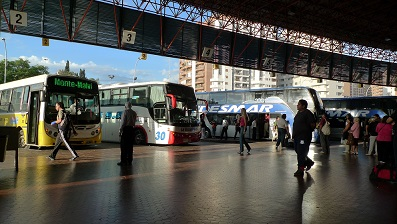

O nama:
 ETF-Trans osnovan je 1994. godine zadužen za pružanje usluga prijevoza putnika.
Kroz dugogodišnji rad ETF-Trans je prošao razne faze organizacionih promjena koje, uprkos izmjenama društvenih prilika, nisu uticale na uspješnost poslovanja.
Danas je ETF-Trans sa svojim voznim parkom, koji broji više od 200 autobusa koji zadovoljavaju stroge sigurnosne evropske i svjetske tehničko-eksploatacione standarde, vodeća firma za autobuski saobraćaj u Bosni i Hercegovini. U našem vlasništvu su savremene auto-baze, pet poslovnih jedinica, osam autobuskih stanica te četiri savremeno opremljene turističke agencije.
Misija ETF-Trans-a je:
• Da se osigura trajno i kvalitetno obavljanje djelatnosti prijevoza putnika korištenjem vlastitih ljudskih i tehničkih potencijala na principima održivog razvoja i stalnog praćenja europskih trendova kvalitete na području prijevozne djelatnosti,
• Da kompanija i njeni uposlenici održavaju sve prijevozne kapacitete u stanju funkcionalne sposobnosti uz maksimalno poštivanje zaštite okoliša, održivog razvoja i javnog interesa lokalne zajednice u kojima djelujemo,
• Da kontinuirano jačamo sistem kontrole poslovanja uz poštivanje europskih standarda transparentnosti poslovanja,
• Da podižemo kvalitet usluge i odnos prema putniku, tako da omogućimo optimalnu popunjenost i iskorištenost prijevoznih kapaciteta i da obezbjedimo prihode kojima se, kroz isplate plaća i dividendi, stvara zadovoljstvo uposlenih i vlasnika kompanije.